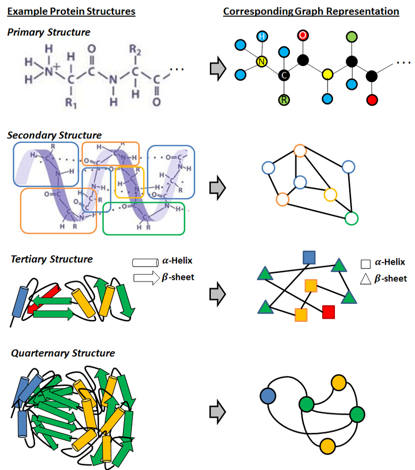

The intersection of artificial intelligence and protein science has been transformative, fundamentally changing our ability to decode the language of life. To truly understand how AI is revolutionizing protein research, we need to look under the hood of the three major architectures powering this change: transformers, graph neural networks (GNNs), and multimodal models. Each of these architectures brings unique strengths to the table, enabling breakthroughs from sequence-based predictions to spatial modeling and integrated multimodal analyses. This post dives into the technical details, applications, and challenges of these models in protein science.
Transformers have become foundational in AI-driven protein science. Originally developed for language processing, transformer architectures can handle sequences by learning complex dependencies between tokens (or words). For protein science, these "tokens" correspond to amino acids, where understanding the relationships between them can reveal significant insights into protein folding and function. Transformers use a self-attention mechanism that allows each amino acid in a sequence to "attend" to others, learning contextual relationships that are essential in understanding a protein’s structure.
Protein sequences may not be human languages, but they exhibit patterns and hierarchies that make them compatible with language-like processing, as seen in the previous post. Just as words in a sentence follow grammatical rules, amino acids follow specific biochemical and structural rules. Transformer models, such as ProtBERT and ESM-2, are designed to "learn" these rules by training on massive protein sequence databases. ProtBERT and ESM-2 represent specialized transformer models adapted for protein science. ProtBERT, for example, was trained on large-scale protein data and can identify structural patterns across diverse sequences. ESM-2, developed by Meta, leverages an advanced transformer model to predict protein structure with high accuracy, enabling researchers to discover functional insights with minimal experimental validation.
By treating amino acids as “tokens,” these models can predict how sequences translate into different outputs - either be it the corresponding 3D conformation, or even the overall protein property. These tasks are critical to applications like drug discovery and understanding disease mechanisms.
Proteins are inherently three-dimensional, with amino acids positioned in specific spatial arrangements that influence their function. Graph neural networks are ideal for this kind of spatial data. By representing proteins as graphs—where each amino acid is a node and each bond or spatial relationship forms an edge—GNNs capture the essential 3D structure. This approach provides a new level of insight, especially for tasks like binding affinity predictions and protein-ligand interactions.
Graph Representation Learning for Protein Classification - Sucheta Dawn, Monidipa Das
In a protein’s graph representation, each node corresponds to an amino acid, while edges represent spatial relationships between these amino acids. The graph model need not necessarily be a direct representation of the 3D structure, but may also capture other information like atomic radius, bond length among others. This graphical representation enables the model to understand not just sequence order but also how different amino acids interact spatially. For example, an enzyme’s active site may depend on interactions between distant amino acids brought together through folding. By “learning” the spatial connectivity, GNNs can recognize these critical functional sites.
There are different GNN Architectures in protein science, which serve different purposes. Some of them include:
GNNs have shown remarkable promise in applications requiring spatial awareness, such as understanding how small molecules (ligands) interact with protein targets. For instance, GNNs have been used to predict how drugs bind to their target proteins, offering insights that are instrumental in drug design. Additionally, GNNs have been applied in structural biology to identify how mutations in proteins impact their function, which is essential for understanding genetic diseases.
The real breakthrough comes from multimodal models, which integrate various data types - sequence, structure, and functional annotations. By combining sequence data from transformers and spatial data from GNNs, multimodal models create a comprehensive representation of proteins. This integration is particularly valuable for complex tasks like predicting protein function, where both sequence and structural information play a crucial role.
In multimodal models, typically, transformers analyze the protein sequence, while GNNs handle 3D structural data. The model then combines these outputs to predict protein properties with great accuracy. For instance, in drug discovery, understanding both the protein’s sequence and its structure is essential for designing effective drug molecules. The integration of both data types provides a holistic view, allowing researchers to model complex interactions at a molecular level. Two of the most impactful techniques within this space are contrastive learning and self-supervised learning (SSL), which enable deeper insights from vast protein datasets.
Contrastive learning is a powerful tool in multimodal models, especially for linking sequence and structure data. The technique works by encouraging a model to “contrast” matching pairs (e.g., a protein sequence with its corresponding structure) against non-matching pairs. By learning these associations, contrastive learning creates embeddings that accurately capture relationships across different data types, such as sequences and their structural forms.
In practice, multimodal models may employ contrastive learning similarly to methods seen in other AI fields, like vision-language models. For example, just as CLIP matches images with text, a contrastive learning model for proteins would match sequence embeddings with structure embeddings. When a new, unseen protein sequence is given as input, the model can project it into this shared space and predict structural features based on similar sequences it has already encountered, achieving high accuracy even with limited labeled data.
The success of multimodal models is further amplified by self-supervised learning (SSL), a technique ideal for handling large, unlabeled protein datasets. SSL trains models to learn from raw data without the need for extensive labeling, making it perfect for protein science, where labeling is often labor-intensive. In protein modeling, SSL techniques such as masked language modeling (inspired by BERT) allow models to learn the “grammar” of amino acid sequences, as well as spatial relationships within structural data.
Self-supervised pretraining is a two-step process in multimodal protein modeling:
In combination with contrastive learning, self-supervised learning in multimodal models creates a powerful synergy. SSL establishes a broad, foundational understanding of protein data, while contrastive learning sharpens the model’s ability to connect different modalities, such as sequence and structure. Together, they allow protein AI models to achieve unprecedented accuracy and robustness, even in challenging, data-scarce scenarios.
The applications of multimodal AI in protein science are wide-ranging. In drug discovery, multimodal models help predict how a drug will interact with multiple protein targets, improving selectivity and reducing side effects. In synthetic biology, researchers can use these models to design proteins with specific functions, such as enzymes tailored for industrial applications or proteins engineered for therapeutic purposes.
The convergence of transformers, GNNs, and multimodal models has redefined protein science, offering new ways to understand the structure-function relationship at molecular and atomic scales. While each model type - transformers, GNNs, and the combined multimodal architectures—offers unique advantages, their combined use has empowered researchers to tackle some of the most complex challenges in biology. As AI in protein science continues to evolve, we can expect further integration of data modalities, moving toward a future where AI not only predicts protein structures but also potentially simulates their interactions in biological systems.
← Back to Blog